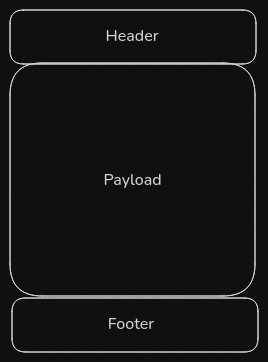
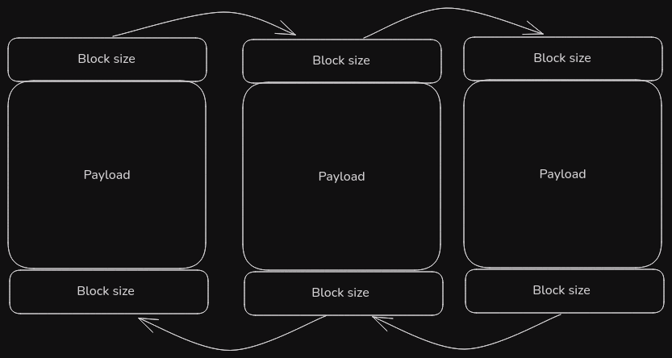
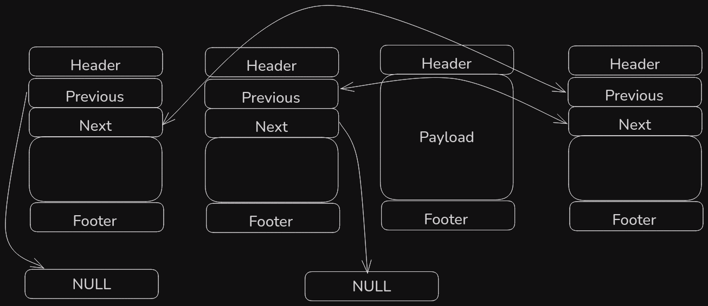
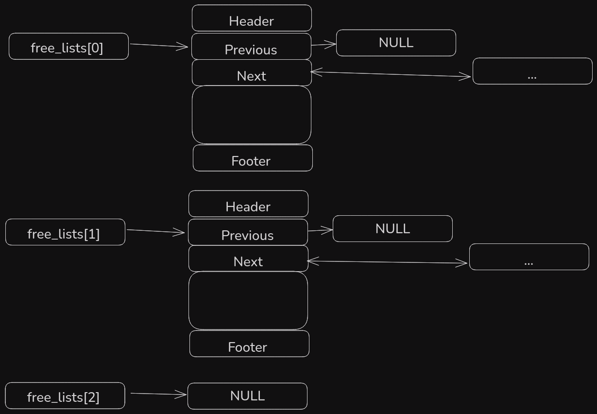

What I learned from re-implementing Malloc
At Carnegie Mellon University, computer science student taking the "Introduction to Computer Systems" course are asked to implement their own version of "malloc", the dynamic memory allocator offered by the C standard library. Let's talk about that.
What's in an allocator
A dynamic memory allocator is primarily used for three things:
- To allocate memory whose size is not known at compile-time
- To allocate very large blocks of memory
- To allocate memory whose lifetime needs to be longer than the scope of the function that allocates it.
A general-purpose allocator like malloc really has the following main requirements, many of which are in conflict with each other:
- Allocation must be very fast.
- The allocator must utilize memory efficiently. This means reducing fragmentation and overhead.
- Memory must be contiguous. If an application asks for a block of a certain size, then that block must be a single block of memory. It cannot be split up.
- Once a memory block has been allocated, its address cannot be moved unless the application explicitly asks to have it reallocated.
- Requests for allocation and freeing of memory can come in in any order, and the allocator cannot reorder them. If a request is received. it is immediately serviced.
- The memory allocator can expect that each allocation request will have a corresponding deallocation request.
The presents an interesting balancing act where the need maximize memory utilization may introduce extra performance overhead, and vice versa. Since live blocks of memory cannot be moved, consolidation of memory blocks can only happen on free blocks of memory. If there are many small fragments of free memory in-between live blocks, too bad, you have to wait until one of those blocks gets freed.
We are given some leeway with the last requirement, however, and that is that it is the responsibility of the application to make sure that memory doesn't leak, that all deallocation requests are valid, and that free memory is never accessed. This means, that the allocator does not need to concern itself with any of those things.
The malloc API
The allocator API that we are going to implement is very simple:
size_t mm_init(void);
void *mm_malloc(size_t size);
void mm_free(void *ptr);
void *mm_realloc(void *ptr, size_t new_size);Each function has the following contracts:
mm_init: Initialize the memory allocator. Return 0 on success, and -1 on failure.mm_malloc: Return a pointer to a memory block that is at leastsizebig, orNULLif the request fails.sizecannot be 0.mm_free: Deallocate the block of memory starting at the address ofptr.ptrmust be the starting address of an allocated block of memory.mm_realloc: Return a pointer to a block of memory that is at leastnew_sizebig. The data at the returned pointer must be identical to the data atptrup to thenew_size'th byte.
To support our implementation, we're given the mem_sbrk function as an analogue to sbrk. This function simply increases the heap by the requested size, and returns the base address of the new area. This way, the autograder that is included in the lab can keep track of where memory is allocated on the heap, and inspect it for measuring the correctness and performance of the allocator.
How is this thing scored
As mentioned, the malloc-lab includes an autograder that is used to inspect the behavior of the memory allocator in order to measure its correctness and performance. It scores the allocator on three metrics:
- Correctness: a faulty allocator gets 0 points.
- Utilization: How much memory is in use vs how much memory was requested (0 points for 0%, 60 points for 100%).
- Throughput: How fast is my memory allocator compared to libc (40 points, if it's at least as fast).
By default, the autograder is configured to compare the throughput of my allocator against a hardcoded value of 600Kops/sec (where each "op" represents a call to malloc, free, and realloc). This is a comically low number on a modern machine. Luckily a commandline option to measure the performance of libc malloc on my own machine, which comes out to ~30,000Kops/sec, which is the value that I will use.
Implicit free-list - the textbook implementation
The first implementation is a simple implicit free-list implementation that is mostly copied over from the CS:APP textbook, with all the macros replaced with inline functions and constexpr values. As a result, this section will mostly be a retread of that section in the textbook.
Each block of memory contains a header and a footer with the payload in the middle.

The header and the footer both encode the size of their block, thus implicitly linking each block together via simple pointer arithmetic starting from the base of the first block of memory.

Due to alignment requirements, each block of memory has to start at an address that is a multiple of either 4 or 8 (depending on whether it's a 32- or 64-bit platform). As a result, the 2 or 3 least significant bits are guaranteed to be zero. We can take advantage of that to encode information about the block in the header as well as the size. We will use the least significant bit to encode whether the block has been allocated or not.
To implement this, let's first define some simple utility functions and constants.
get_size: returns the size-field from a header or footer.get_alloc: returns the alloc-field from a header or footer.put: assigns a value to a header or footer.pack: returns the bitwise or of two unsigned integers (used to pack the size-field with the alloc field).header: returns the header pointer from a block pointerfooter: returns a footer pointer from a block pointernext_block_pointer: returns the next block pointer from the current one.prev_block_pointer: returns the previous block pointer from the current one.
From this we can start constructing our allocator. We start with the init function.
int mm_init(void) {
if ((heap_listp = mem_sbrk(4 * w_size)) == (void *)-1)
return -1;
// padding
put(heap_listp, 0);
//prologue headers
put(heap_listp + w_size, pack(d_size, 1));
put(heap_listp + (2 * w_size), pack(d_size, 1));
//epilogue header
//this gets overwritten when the heap is extended
put(heap_listp + (3 * w_size), pack(0, 1));
//set the base of the heap to be at the prologue
heap_listp += (2 * w_size);
if (extend_heap(chunk_size) == NULL)
return -1;
return 0;
}We create an initial heap with a total of 4 32-bit words. The first word is padding to keep the heap aligned to 8 bytes, while the prologue headers create an "allocated" block that points to the epilogue block which terminates the list. At this point, the heap is ready to use, however, with no free blocks, it's perhaps not the most useful heap in the world, so let's extend it.
static void *extend_heap(size_t size) {
//align the size to 8 bytes
size = ((size - 1) | 0x7) + 1;
char *bp;
if ((long)(bp = mem_sbrk(size)) == -1)
return NULL;
//create the new free block
//overwriting the previous epilogue
put(header(bp), pack(size, 0));
put(footer(bp), pack(size, 0));
//create new epilogue
put(header(next_block_pointer(bp)), pack(0, 1));
return coalesce(bp);
}We overwrite the epilogue with a new header specifying a free block of the size of the extension. Because it's not unlikely that this new free block comes after another free block, we also choose to coalesce it, that is, combine any neighboring free blocks into one single block.
static void *coalesce(char *bp) {
// Is the previous block allocated?
size_t prev_alloc = get_alloc(footer(prev_block_pointer(bp)));
// Is the next block allocated?
size_t next_alloc = get_alloc(header(next_block_pointer(bp)));
size_t size = get_size(header(bp));
if (prev_alloc && next_alloc)
/*
* Case 1:
* No neighbouring block is free. Do not coalesce.
* Return the same pointer
*/
return bp;
else if (prev_alloc && !next_alloc) {
/*
* Case 2:
* The preceding block is not free, but the succeeding
* one is. Add the size of that block to the current size,
* encode it in the header of the current block, and return
* its pointer.
*/
size += get_size(header(next_block_pointer(bp)));
put(header(bp), pack(size, 0));
put(footer(bp), pack(size, 0));
} else if (!prev_alloc && next_alloc) {
/*
* Case 3:
* The preceding block is free, but the succeeding
* block is not. Add the size of the the preceeding block
* to the size, encode it in the header of the preceeding block
* and return a pointer to that block.
*/
size += get_size(footer(prev_block_pointer(bp)));
put(footer(bp), pack(size, 0));
put(header(prev_block_pointer(bp)), pack(size, 0));
bp = prev_block_pointer(bp);
} else {
/*
* Case 4:
* Both neighboring blocks are free. Add
* the sizes of all three blocks together and encode
* it in the header of the preceeding block. Return
* a pointer to that block.
*/
size += get_size(footer(prev_block_pointer(bp))) +
get_size(header(next_block_pointer(bp)));
put(header(prev_block_pointer(bp)), pack(size, 0));
put(footer(next_block_pointer(bp)), pack(size, 0));
bp = prev_block_pointer(bp);
}
return bp;
}Now let's look at how we actually allocate memory.
void *mm_malloc(size_t size) {
size_t adj_size;
size_t ext_size;
char *bp;
// 0 is not a valid size.
if (size == 0) {
return NULL;
}
// Calculate the effective size of the block.
// The block must be at least the size two headers
// plus and an 8 byte word.
// The total payload will be at least 8 bytes larger than
// the requested size to acommodate the header and the footer
if (size <= d_size) {
adj_size = 2 * d_size;
} else {
adj_size = d_size * ((size + (d_size) + (d_size - 1)) / d_size);
}
// Find a block of memory to satisfy the request.
if ((bp = find_fit(adj_size)) != NULL) {
//Allocate the block
place(bp, adj_size);
return bp;
}
//If no block is found, extend the heap. If extending the heap
//fails, the allocation fails
ext_size = max(adj_size, chunk_size);
if ((bp = extend_heap(ext_size)) == NULL) {
return NULL;
}
//Allocate to the new block.
//Since we extended the heap by at least the amount
//needed to satisfy the request, it is a guaranteed fit.
place(bp, adj_size);
return bp;
}Now is a good time to talk about fit-policies. There are many different strategies to take when it comes to finding an appropriate block of memory to allocate (a fit). There are three popular ones:
- First fit: Search the whole list from the beginning of the free-list. Select the first available block that can satisfy the request.
- Next fit: Like first fit, but instead of starting from the beginning, start from where the last search left off.
- Best fit: Search the entire free-list and select the block that is closest in size to the requested size. Short-circuit on an exact match. On the surface, this looks like a simple trade-off between throughput and utilization. Pick first fit for throughput, and best-fit for utilization. It is not so simple, however. The issue with a best-fit policy is that, paradoxically, a fit can be too good without being perfect, depending on the allocator's splitting policy. As a result, the allocator may split off many small blocks of memory, that are too small to satisfy any request, and all but contribute to fragmentation. For this allocator, we choose a first-fit policy because it is the simplest.
static void *find_fit(size_t size) {
for (char *bp = heap_listp;
get_size(header(bp)) > 0;
bp = next_block_pointer(bp)
) {
if (!get_alloc(header(bp)) && (size <= get_size(header(bp)))) {
return bp;
}
}
return NULL;
}This one is very simple. Just iterate through each block on the list. If a block is not allocated, and its size is large enough, allocate it. If no block is found, return NULL.
Next comes placement.
static void place(void *bp, size_t size) {
size_t csize = get_size(header(bp));
//if the split block is at least as large
//as the minimum block size
if ((csize - size) >= (2 * d_size)) {
//split
put(header(bp), pack(size, 1));
put(footer(bp), pack(size, 1));
bp = next_block_pointer(bp);
put(header(bp), pack(csize - size, 0));
put(footer(bp), pack(csize - size, 0));
} else {
//else do not split and simply mark as allocated
put(header(bp), pack(csize, 1));
put(footer(bp), pack(csize, 1));
}
}First, we have to decide on whether or not to split the block in two. For this implementation we simply check, if the split block would be at least large enough to hold the minimum block size, and if it is, split it.
By setting the alloc-bit to one, we have marked it as allocated, and the malloc-function can safely return a pointer to the block.
Freeing memory in this kind of allocator is very simple:
void mm_free(void *bp) {
size_t size = get_size(header(bp));
put(header(bp), pack(size, 0));
put(footer(bp), pack(size, 0));
coalesce(bp);
}Just mark the block as free and coalesce.
Finally we have realloc. This one is actually just the default implementation included in the lab:
void *mm_realloc(void *bp, size_t size) {
void *oldptr = bp;
void *newptr;
size_t copy_size;
newptr = mm_malloc(size);
if (newptr == NULL)
return NULL;
copy_size = get_size(header(oldptr)) - d_size;
if (size < copy_size)
copy_size = size;
memcpy(newptr, oldptr, copy_size);
mm_free(oldptr);
return newptr;
}This implementation simply makes a call to malloc for a block of the new size, uses memcpy to copy the data of the old block over to the new block, and frees the old block.
With that, we have a fully functional memory allocator. Let's see how it performs.
Results for mm malloc:
trace valid util ops secs Kops/sec
0 yes 99% 5694 0.003271 1741
1 yes 98% 5848 0.003519 1662
2 yes 99% 6648 0.004608 1443
3 yes 99% 5380 0.003373 1595
4 yes 20% 14400 0.000059242424
5 yes 91% 4800 0.004205 1142
6 yes 92% 4800 0.003832 1252
7 yes 55% 12000 0.067335 178
8 yes 51% 24000 0.110799 217
9 yes 21% 14401 0.025789 558
10 yes 23% 14401 0.000938 15348
Total 68% 112372 0.227729 493
Perf index = 41 (util) + 1 (thru) = 41/100While memory utilization isn't disastrous, the throughput here is abysmal, coming in at around ~1.5% of the throughput of libc malloc. So why is that?
Freeing is obviously very fast, both the free and coalesce operations are constant-time involving only addition and bit-flipping.
Allocation on the other hand involves a linear search, not just of the free list (there is no free-list to be quite honest), but of the entire implicit list of every block of memory known to the allocator. Not only is this slow by default, but it will get slower and slower as the heap grows.
We can do better.
Second iteration: explicit free-list
Since free-blocks are, well, free, we're allowed to put any data we want in them. Thus we can make our free-list data structure explicit by including pointers to the previous and next free memory blocks, creating a doubly-linked list.

(For simplicity's sake, the free-list has been rendered with double-sided arrows, but in practice, every pointer is the address of the base of the block that it points to. So both next and previous point to the previous-field of the next and previous node in the list respectively.)
As illustrated, one consequence of this is that the free-list is no longer ordered by continuously by their address. There are explicit free-list implementations that are address-ordered (and literature suggests that they are good at reducing fragmentation), however, we are only going to consider two policies for our allocator:
- First in, first out (FIFO): Each new free block is appended to the tail of the list. The free-list is searched from the head, so the least recently freed block that fits will be allocated for a given request.
- Last in, first out (LIFO): Each new free block is prepended to the head of the list. The free-list is search from the head, so the most recently freed block that fits will be allocated for a given request. In either case it is a standard implementation of a doubly-linked list, so I won't bore you with the details.
Now, it turns out that we only have to make some pretty minor changes to our existing code in order to implement the explicit free-list. Let's look at mm_malloc:
void *mm_malloc(size_t size) {
...
- if (size <= d_size) {
- adj_size = 2 * d_size;
+ if (size <= 3 * w_size) {
+ adj_size = min_block_size;
} else {
- adj_size = d_size * ((size + (d_size) + (d_size - 1)) / d_size);
+ adj_size = ((w_size + size - 1) | 0x7) + 1; // size + header
...Because each free block now needs to hold two pointers, a header, and a footer, the minimum block size has to be increased in order to accommodate one. A constant has been introduced to encode this value. I also decided to change the way that the alignment operation is implemented.
extend_heap and mm_free just need to insert the new free block into the free-list.
static void *extend_heap(size_t size) {
size = ((size - 1) | 0x7) + 1;
char *bp;
if ((long)(bp = mem_sbrk(size)) == -1)
return NULL;
put(header(bp), pack(size, 0));
put(footer(bp), pack(size, 0));
put(header(next_block_pointer(bp)), pack(0, 1));
+ bp = coalesce(bp);
+ insert_node((free_node_t *)bp);
- return coalesce(bp);
+ return bp;
}
void mm_free(void *bp) {
size_t size = get_size(header(bp));
put(header(bp), pack(size, 0));
put(footer(bp), pack(size, 0));
- coalesce(bp);
+ bp = coalesce(bp);
+ insert_node(bp);
}
coalesce is now responsible for removing consolidated blocks from the free list.
static void *coalesce(char *bp) {
size_t prev_alloc = get_alloc(footer(prev_block_pointer(bp)));
size_t next_alloc = get_alloc(header(next_block_pointer(bp)));
size_t size = get_size(header(bp));
if (prev_alloc && next_alloc)
return bp;
else if (prev_alloc && !next_alloc) {
- size += get_size(header(next_block_pointer(bp)));
+ char *next_bp = next_block_pointer(bp);
+ size += get_size(header(next_bp));
put(header(bp), pack(size, 0));
put(footer(bp), pack(size, 0));
+ free_node_t *neighbour_node = (free_node_t *)next_bp;
+ remove_node(neighbour_node);
} else if (!prev_alloc && next_alloc) {
- size += get_size(footer(prev_block_pointer(bp)));
+ char *prev_bp = prev_block_pointer(bp);
+ size += get_size(footer(prev_bp));
+ free_node_t *prev_node = (free_node_t *)prev_bp;
+ remove_node(prev_node);
put(footer(bp), pack(size, 0));
put(header(prev_block_pointer(bp)), pack(size, 0));
bp = prev_block_pointer(bp);
} else {
- size += get_size(footer(prev_block_pointer(bp))) +
- get_size(header(next_block_pointer(bp)));
+ char *next_bp = next_block_pointer(bp);
+ char *prev_bp = prev_block_pointer(bp);
+ size += get_size(footer(prev_bp))
+ + get_size(header(next_bp));
+ free_node_t *prev_node = (free_node_t *)prev_bp;
+ remove_node(prev_node);
put(header(prev_block_pointer(bp)), pack(size, 0));
put(footer(next_block_pointer(bp)), pack(size, 0));
+ free_node_t *next_node = (free_node_t *)next_bp;
+ remove_node(next_node);
bp = prev_block_pointer(bp);
}
return bp;
}
place removes allocated blocks from the free-list, and inserts newly split blocks back into it.
static void place(void *bp, size_t size) {
size_t csize = get_size(header(bp));
- if ((csize - size) >= (2 * d_size)) {
+ if ((csize - size) >= min_block_size) {
put(header(bp), pack(size, 1));
put(footer(bp), pack(size, 1));
+ free_node_t *node = (free_node_t *)bp;
+ remove_node(node);
bp = next_block_pointer(bp);
put(header(bp), pack(csize - size, 0));
put(footer(bp), pack(csize - size, 0));
+ free_node_t *new_node = (free_node_t *)bp;
+ insert_node(new_node);
} else {
put(header(bp), pack(csize, 1));
put(footer(bp), pack(csize, 1));
+ free_node_t *node = (free_node_t *)bp;
+ remove_node(node);
}
}
An important lesson that I keep having to relearn is keep it working. You can implement all the supporting code for the explicit-free list without touching the implicit free-list code at all. None of the code-changes mentioned so far have actually changed any of the behavior of the code at all except for maintaining this, currently inconsequential, data structure, and increasing the minimum block size by 8 bytes. We're still running a working implicit free-list.
The final code change is to then switch the find_fit function from traversing the list by block size to traversing the linked-list data structure we just implemented.
static void *find_fit(size_t size) {
- char *bp;
- for (bp = heap_listp;
- get_size(header(bp)) > 0;
- bp = next_block_pointer(bp)
- ) {
- if (!get_alloc(header(bp))
- && (size <= get_size(header(bp)))
- ) {
- heapcheck(__LINE__);
- return bp;
+ for (free_node_t *node = free_list;
+ node;
+ node = node->next
+ ) {
+ if (size <= get_size(header((char *)node))) {
+ return node;
}
}
}
In reality, I didn't actually do it like that. I made many ill-considered changes that left me with a hard-to-debug broken allocator, and I ran git restore mm.c at least a few times. So let that be a lesson: keep it working.
With the explicit free-list done, let's run the autograder and measure our performance: LIFO:
Results for mm malloc:
trace valid util ops secs Kops/sec
0 yes 89% 5694 0.000093 61160
1 yes 91% 5848 0.000058100309
2 yes 94% 6648 0.000160 41524
3 yes 97% 5380 0.000125 42971
4 yes 66% 14400 0.000065221880
5 yes 89% 4800 0.000305 15722
6 yes 88% 4800 0.000307 15615
7 yes 55% 12000 0.000988 12143
8 yes 51% 24000 0.001298 18489
9 yes 27% 14401 0.025642 562
10 yes 30% 14401 0.001027 14020
Total 71% 112372 0.030070 3737
Perf index = 42 (util) + 5 (thru) = 47/100FIFO:
Results for mm malloc:
trace valid util ops secs Kops/sec
0 yes 98% 5694 0.000062 92435
1 yes 96% 5848 0.000065 90667
2 yes 98% 6648 0.000073 90449
3 yes 99% 5380 0.000051106324
4 yes 66% 14400 0.000064224299
5 yes 92% 4800 0.000741 6474
6 yes 91% 4800 0.000664 7225
7 yes 55% 12000 0.007343 1634
8 yes 51% 24000 0.034446 697
9 yes 27% 14401 0.026885 536
10 yes 30% 14401 0.001033 13945
Total 73% 112372 0.071427 1573
Perf index = 44 (util) + 2 (thru) = 46/100Now, while the dramatic difference between the two is somewhat surprising (the fact that the slowest traces are the ones that do the most calls to realloc might be part of the story here), I am not at all surpised that the LIFO version comes out ahead, and the reason for that is locality.
Locality is simply the idea that memory that has been accessed once, will most likely be accessed again, and when one block of memory gets accessed, its neighboring blocks will most likely be accessed too. Thus, code that exhibits high locality, will access the same memory frequently, and access contiguous blocks of memory in sequence. This has performance implications due the way the CPU cache works. Simply put code with good locality will have fewer cache misses, resulting in faster memory access.
Arguably, blocks of memory that have been freed more recently, are also more likely to have been used more recently. As a result, they then more likely to be present in lower (faster) levels of cache memory. Given that LIFO allocates the most recently freed blocks, and FIFO allocates the least recently freed blocks, it would come as a surprise, if LIFO interacts better with the CPU caches and is faster as a result.
This is still a linear search, however. A linear search on a smaller n, but linear nonetheless. We can do better.
But first, it's time to stop cheating
Unfortunately there's a fundamental problem with treating this as a portable, general-purpose allocator, and that is that the header data has been encoded in an unsigned int, which is a 32-bit value on x86 and x64. This is an artifact from following the textbook-implementation from earlier. While this would be totally ok if we restrict ourselves to making an allocator for a 32-bit system, it feels a bit like cheating, because it allows us to pack the headers more closely.
For the autograder, this is no problem, because the autograder's heap is limited to 20MB, a size that fits well within a 32-bit unsigned integer, and thus it has not caused any problems so far. However, this is supposed to be a general-purpose allocator, and it's honestly an interesting exercise to make it work the same on both 32-bit and 64-bit architectures.
size_t is an unsigned integer data type in C used to represent the size of an object. Since an object, in theory, could be as large as the entire virtual address space, size_t needs to be able to accommodate a size that is at least as large (at least, I assume this to be the case, I haven't actually looked that up). As such, size_t is 4 bytes on x86, and 8 bytes on x64. From this point onward, block metadata is represented using a size_t instead of an unsigned int.
Results for mm malloc:
trace valid util ops secs Kops
0 yes 89% 5694 0.000114 49904
1 yes 92% 5848 0.000070 83782
2 yes 94% 6648 0.000172 38696
3 yes 96% 5380 0.000122 43954
4 yes 66% 14400 0.000084172249
5 yes 86% 4800 0.000301 15942
6 yes 85% 4800 0.000278 17266
7 yes 51% 12000 0.003027 3964
8 yes 50% 24000 0.001738 13811
9 yes 26% 14401 0.026118 551
10 yes 38% 14401 0.000971 14831
Total 70% 112372 0.032995 3406
Perf index = 42 (util) + 5 (thru) = 47/100Only a minor performance hit.
A small optimization that was done in conjunction with this change was removing the footer from allocated blocks, and encoding whether the previous block was allocated in a bit-field in the header. The advantage of doing this is arguably pretty small.
Third iteration: segregated free-list
Let's finally address the linear search of the free-list. What if, instead of searching the entire free-list for a block of appropriate size, we eliminate every block that is guaranteed to be too small, and only search blocks that are either of similar size or larger. This is where the segregated free-list comes in.
The idea is that instead of having just one free-list, we have an array of free-lists, where each list has its own size-class.

By having each size-class be a power of two, we can allocate an array of w_bits pointers to a free list, where w_bits is the number of bits in a size_t. This way, we can calculate the size class of a given node or requested size by taking the floored base 2 logarithm of the given size. Given that the minimum block size is 4, the log base 2 of which is 2, we could in theory eliminate size class 0 and 1 from the array, but we only eliminate size class 0.
All we have to do to our free-list data structure is take the log base 2 of the size to calculate the index into the free-list array, and then insert the node into the correct free-list like before.
Then all we need to do is allocate some extra space on the heap for the array of free-lists and initialize it to 0 in mm_init and update find_fit.
static void *find_fit(size_t size) {
- for (free_node_t *node = free_list;
- node;
- node = node->next
- ) {
- if (size <= get_size(header((char *)node))) {
- return node;
+ size_t i = log2_of(size) - 1;
+ while (i < w_bits) {
+ for (free_node_t *node = free_lists[i];
+ node;
+ node = node->next
+ ) {
+ if (size <= get_size(header((char *)node))) {
+ return node;
+ }
}
+ i++;
}
return NULL;
}
(yes, the outer loop could have been a for-loop too)
And that's all there is to it. Let's see how it compares.
Results for mm malloc:
trace valid util ops secs Kops
0 yes 98% 5694 0.000098 57925
1 yes 97% 5848 0.000111 52590
2 yes 99% 6648 0.000126 52846
3 yes 99% 5380 0.000099 54343
4 yes 65% 14400 0.000198 72691
5 yes 92% 4800 0.000180 26652
6 yes 90% 4800 0.000174 27602
7 yes 55% 12000 0.000163 73620
8 yes 50% 24000 0.000303 79156
9 yes 25% 14401 0.026707 539
10 yes 16% 14401 0.001766 8156
Total 71% 112372 0.029926 3755
Perf index = 43 (util) + 5 (thru) = 48/100At a glance, that looks like a pretty minor improvement, but look at trace 9. What's going on with that?
A second look at realloc
Well, trace 9 is called realloc-bal.rep which should give you a hint. Recall that we haven't touched mm_realloc at all so far, and it is a guaranteed call to memcpy, which certainly sounds expensive. So let's try to optimize that.
The requirements state that we only need to return a pointer to block of memory of the requested size with the old data available. It doesn't say it has to be a different pointer, and if we can return the same pointer, than we don't have to memcpy, not to mention the associated calls to mm_malloc and mm_free.
There are two cases we have to care about:
- The requested size + header is equal to or less than the currently allocated block size.
- The requested size + header is larger than the currently allocated block size.
Case 1 is trivial. We simply return the same pointer and do nothing. We could try to split to create a free block of memory, but that appeared to make utilization worse, not better.
In case 2, we can avoid the reallocation and copying by coalescing with the next block of memory on the condition that it is not already allocated.
void *mm_realloc(void *bp, size_t size) {
void *oldptr = bp;
+ size_t block_size = get_size(header(oldptr));
+ if (size + w_size < block_size) {
+ return oldptr;
+ } else if (size < block_size) {
+ size = block_size;
+ }
+
+ char *next_bp = next_block_pointer(bp);
+ size_t next_alloc = get_alloc(header(next_bp));
+ size_t next_size = get_size(header(next_bp));
+ if (!next_alloc && size + w_size <= block_size + next_size) {
+ block_size += next_size;
+ put(header(bp), pack(block_size, 1));
+ remove_node((free_node_t *)next_bp);
+ set_prev_alloc(header(next_block_pointer(bp)), 1);
+ heapcheck(__LINE__);
+ return bp;
+ }
+
void *newptr = mm_malloc(size);
if (newptr == NULL)
return NULL;
- size_t copy_size = get_size(header(oldptr)) - w_size;
- if (size < copy_size)
- copy_size = size;
- memcpy(newptr, oldptr, copy_size);
memcpy(newptr, oldptr, block_size);
mm_free(oldptr);
return newptr;
}
Let's see how that performs.
Results for mm malloc:
trace valid util ops secs Kops
0 yes 98% 5694 0.000121 47136
1 yes 97% 5848 0.000123 47622
2 yes 99% 6648 0.000148 44858
3 yes 99% 5380 0.000125 43213
4 yes 64% 14400 0.000157 91778
5 yes 92% 4800 0.000199 24169
6 yes 90% 4800 0.000194 24793
7 yes 55% 12000 0.000196 61224
8 yes 50% 24000 0.000339 70734
9 yes 46% 14401 0.000165 87120
10 yes 66% 14401 0.000123117463
Total 78% 112372 0.001889 59500
Perf index = 47 (util) + 40 (thru) = 87/100Ok then. I appear to have made a malloc that is twice as fast as libc-malloc.
But that's not really a fair comparison. For one, this implementation is evaluated against a small set of mostly synthetic allocation patterns, which is not necessarily representative of the kinds of allocation patterns a real-world allocator would have to face.
Secondly, my allocator is not thread-safe. If a multi-threaded program were to use my allocator from concurrent threads, disastrous things would likely happen.
And finally, libc-malloc likely does a lot of work to maximize memory utilization that my allocator doesn't do, especially to guard against what one might call pathological allocation patterns. You may notice that while the average memory-utilization of my own allocator is ok, the utilization shown in some of these traces is downright catastrophic. 50% utilization is simply not ok, unless you're allocating single size_t's almost exclusively.
So what did we learn
Arguably the purpose of this exercise is not for me to write my own general-purpose allocator for a general-purpose widely used operating system. I can't write a better allocator than libc, and I don't need to.
However, that doesn't mean it was at all pointless. There are many reasons one might want to learn how to reinvent the wheel. Here are a few:
- Learning how to implement a simplified version of malloc, improves my understanding of how to use the malloc that is installed on my operating system. This goes for all things programming in my opinion. If you learn how to build the thing, even if it's a toy version of the thing, you get better at using the real thing. You get a deeper understanding of what its capabilities are, what kinds of things can go wrong, and how to mitigate them.
- Sometimes you might actually find yourself needing to write your own memory allocator. This is the case more so in the embedded world than not, but it does also apply to userspace applications running in OS'es like Linux. A common use case that is brought up in the textbook, for instance, is graph data structures, where the program might request a large block of memory from malloc, and then use its own purpose-built allocator to manage allocations within that block.
- I gain a deeper understanding of the security implications of memory bugs. It is a well-known fact that memory bugs make up one of the largest classes of security vulnerabilities in the wild. Many of these are related to overflowing string buffers, but a large amount is also related to use-after-free bugs and double-free bugs. Now that I know how memory allocation works under the hood, I have a much stronger mental model of why these things can be security vulnerabilities, and I think that's important too, if I want to be someone writing safe software.